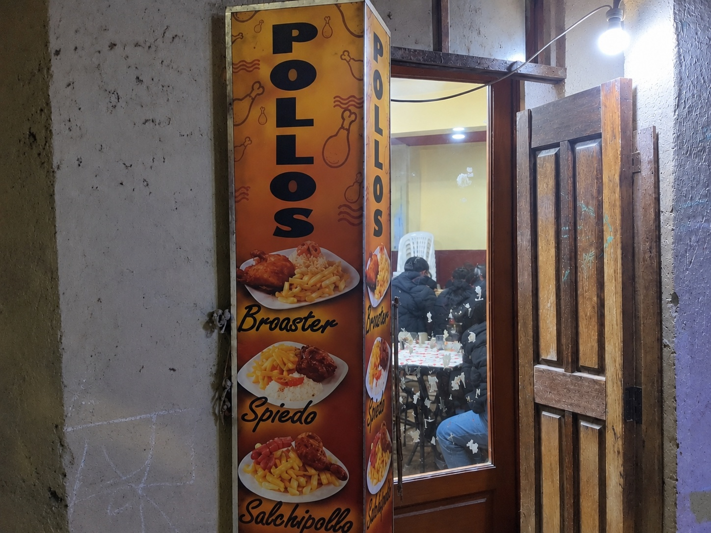

La historia detrás de Pollos Chicken

Pollos Chicken es un emprendimiento dedicado a la preparación y comercialización de comida rápida, principalmente pollos al espiedo y broaster.
La iniciativa surge como una alternativa de autoempleo y generación de ingresos económicos para su propietaria, la señora Lizbeth.
El emprendimiento representa una oportunidad para contribuir al sostenimiento y fortalecimiento de la economía familiar.
La creación de esta página web busca mejorar la difusión de los productos y contribuir al posicionamiento y reconocimiento de Pollos Chicken en su entorno local.
Ofrecer pollos al espiedo y broaster de buen sabor y calidad, brindando una atención cordial y contribuyendo al crecimiento del emprendimiento y al fortalecimiento de la economía familiar.
Ser un emprendimiento reconocido en el entorno local por la calidad y sabor de nuestros productos, fortaleciendo nuestra presencia mediante el uso de herramientas digitales.
Estamos ubicados en Parada Mini 2.
Parada Mini 2
+591 68322655
Lunes a Domingo
19:00 - 21:30